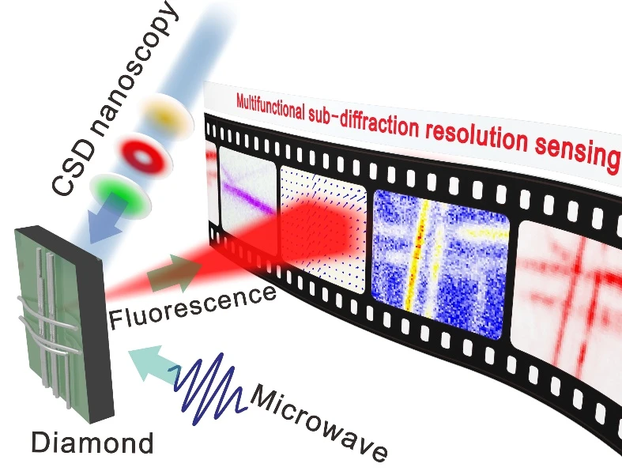

Research overview
Nitrogen-vacancy (NV) centers in diamond are atomic-scale defects with stable optical properties and long room-temperature coherence. Their spin-dependent fluorescence enables measurements of magnetic and electric fields, temperature and strain.
Our charge-state-depletion imaging reached 4.1 nm resolution. Combining this method with spin readout enabled electromagnetic sensing at 50 nm resolution. We also observed microwave-field confinement within roughly 291 nm of a nanowire—about one millionth of the free-space wavelength.
Hybrid diamond–metal antennas concentrate weak microwave signals and enhance their interaction with spins. This approach enabled quantum-enhanced ranging with position precision at the 10 μm scale. Other work applies quantum imaging to nanoscale material phase transitions and electronic devices.


English overview adapted from the laboratory’s research description. Read the Chinese source